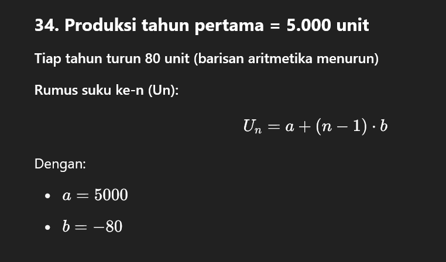

Daftar Soal dan Jawaban
31. Sebuah huruf dipilih secara acak dari huruf-huruf pada kata KERETA. Tentukan peluang terpilihnya huruf E
Jawaban: 1/3
32. Jika diketahui log 2 = 0,3010 dan log 3 = 0,4771. Tentukan nilai dari log 12
Jawaban: 1.0791
33. Tentukan suku pertama dan beda dari baris 2, -1, -4, -7, . . .
Jawaban: a = 2, b = −3
34. Suatu perusahaan memproduksi 5.000 unit barang pada tahun pertama. Pada tahun-tahun berikutnya, hasil produksi turun secara bertahap sebesar 80 unit pertahun.
Jawaban: a = 5000, b = −80

35. Tentukan pada tahun ke berapakah perusahaan tersebut hanya memproduksi 3.000 unit barang
Jawaban: tahun ke-26
36. Tentukan bentuk sederhana dari 5log 125 + 2log 8
Jawaban: 6
37. Tentukan Rumus suku ke-n, dari baris 5, 10, 15, 20, . . .
Jawaban: Un = 5n
38. Tentukan Kuartil ketiga dari data: 3, 4, 9, 1, 8, 7, 2, 6, 3, 9, 2, 8, 2, 7, 3, 6, 5
Jawaban: 7.5
39. Tentukan modus dari data: 3, 4, 5, 5, 8, 7, 6, 5, 5, 6, 9
Jawaban: 5
40. Tentukan ragam dari data usia balita (dalam bulan) di posyandu “Bayi sehat” sebagai berikut
Jawaban: 29